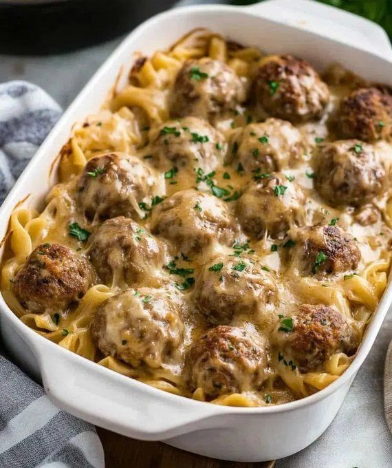

Swedish Meatball Pasta Bake

- Meal
- Dinner
- Serves
- 6 (estimate; the source gives no yield, so the original amounts are kept)
- Protein
- ground beef + ground pork meatballs
- Cook
- stovetop + oven, 9×13 · ~40 min active / ~70 min total · moderate
- Make-ahead / leftovers
- yes (assemble up to 24 h ahead; freezes 2 months) / yes
- Mediterranean
- no
- WW tier
- heavy
- Status
- Trying out (probation)
Allspice-and-nutmeg beef/pork meatballs browned, then baked over wide egg noodles in a creamy Swedish gravy with an optional Swiss/Gruyère top. Not Spaghetti & Meatballs (tomato sauce) and not Turkey Meatballs in Tomato Sauce.
Ingredients
Original amounts from the post (no yield stated). Kitchen estimate: ~24 meatballs + 12 oz noodles in a 9×13 feeds the household of 6, so nothing is scaled.
Meatballs
- 1 lb (450 g) ground beef
- ½ lb (225 g) ground pork (or all beef)
- ½ cup fresh breadcrumbs (or panko)
- ¼ cup milk
- 1 large egg
- ½ small onion, very finely minced or grated
- 1 clove garlic, minced
- 1 tsp kosher salt
- ½ tsp black pepper
- ½ tsp allspice
- ¼ tsp nutmeg
- 2 tbsp parsley, chopped (optional)
- 1–2 tbsp oil, for browning
Pasta
- 12 oz (340 g) wide egg noodles (or mafalda/rotini)
- Salted water for boiling
Swedish gravy
- 4 tbsp unsalted butter
- 4 tbsp flour
- 2 cups low-sodium beef broth
- ¾ cup heavy cream (or half-and-half)
- 1 tbsp Worcestershire sauce — use a fish-free (anchovy-free) Worcestershire; see Fish-allergy note
- 1 tsp Dijon mustard
- ½ tsp kosher salt (to taste)
- ½ tsp black pepper
- Optional: 1–2 tsp soy sauce for deeper savoriness
For the bake
- 1 cup shredded Swiss, Gruyère, or mozzarella (optional)
- Parsley, chopped, for garnish
- Lingonberry jam and a green salad, optional, to serve
Method
Source method (Flavorful Kitchen Adventures).
- Cook pasta: boil the noodles in salted water to just shy of al dente (about 1 minute less than the package). Drain.
- Make meatballs: soak the breadcrumbs in the milk 2 minutes. Mix in the beef, pork, egg, onion, garlic, salt, pepper, allspice, nutmeg and parsley until just combined. Scoop into 1–1¼-inch balls (about 24). Brown in a large skillet with a little oil over medium-high, turning, 5–7 minutes. Move to a plate (they finish in the oven).
- Make the gravy: in the same skillet, melt the butter over medium. Whisk in the flour; cook 1–2 minutes until blond. Slowly whisk in the broth until smooth; simmer 2–3 minutes to thicken. Stir in the cream, Worcestershire, Dijon, salt, pepper (and soy sauce if using). Simmer 1–2 minutes; taste. You want a pourable, creamy gravy.
- Assemble: heat the oven to 375°F (190°C). Grease a 9×13 dish. Toss the noodles with about 1 cup of gravy and spread in the dish. Nestle the meatballs over the noodles and pour the rest of the gravy over. Sprinkle with cheese if using.
- Bake uncovered 20–25 minutes, until bubbly and the meatballs reach 165°F (74°C). Broil 1–2 minutes for color if you like.
- Serve: rest 5 minutes; garnish with parsley.
Notes
- Servings: the post gives no yield. Serving count of 6 is Kitchen's estimate; amounts are the source's, unscaled.
- Red / processed meat: beef + pork meatballs. Counts toward the ≤2 red/processed-meat cap (house rule counts meatballs as processed too).
- WW tier heavy: red-meat-centric + butter/cream gravy + optional cheese + refined egg noodles.
- Mediterranean ✗: red meat, butter/cream fat, refined noodles, no real vegetable (0 of 4).
- Tomato / legumes / fish: none.
- a fish-free plate / hidden fish: not a fish dish, but Worcestershire normally contains anchovy. Use a fish-free Worcestershire (check the label) or leave it out and use the optional soy sauce. Also check the beef broth label for Worcestershire/anchovy.
- Source swaps: turkey for part of the meat and half-and-half for the cream make it lighter (closer to moderate).
- Nutrition: not given by the source; none listed here.
Source: Flavorful Kitchen Adventures (@annann886), via X: https://x.com/annann886/status/2118236874737389685